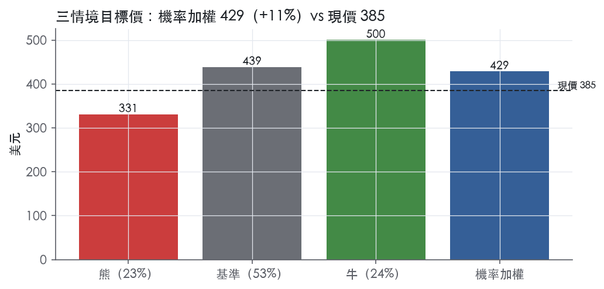
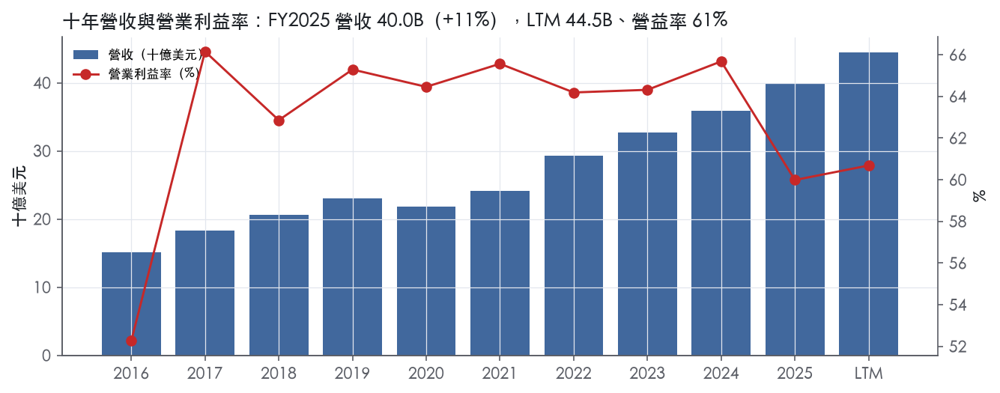
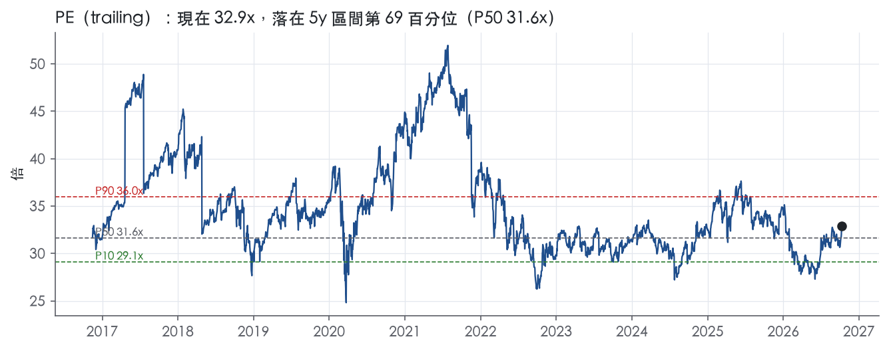
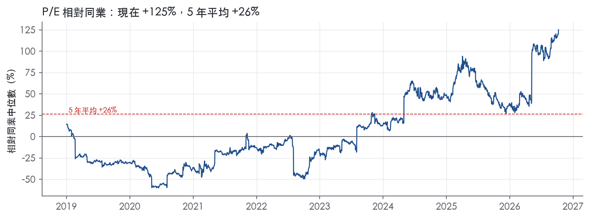
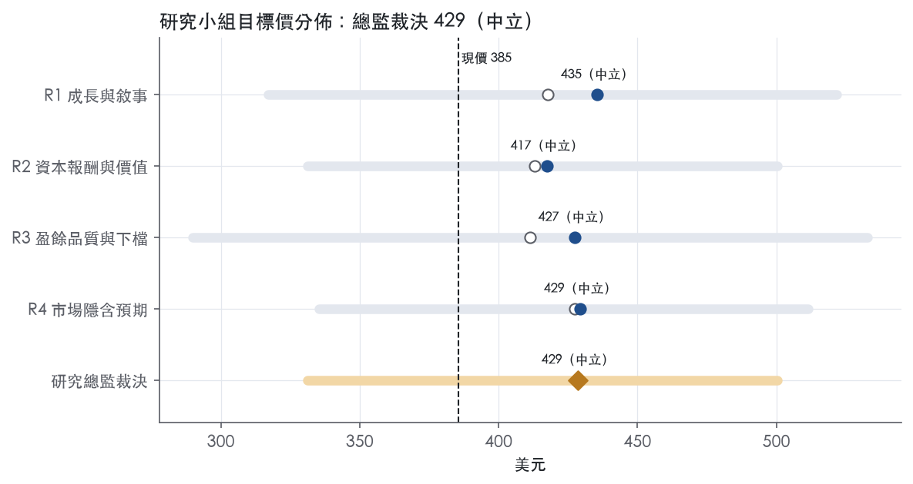
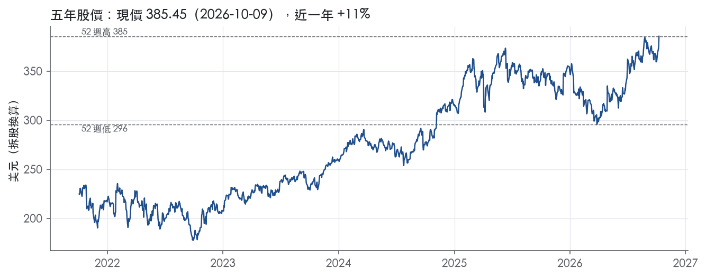

評等總表 › 金融 › V
常態成長已定價，監管致左偏，中性｜評等 中立｜目標價 429
| 報告日 | 評等 | 目標價 | 當時股價 | 超額報酬 |
|---|---|---|---|---|
| 2026-10-09 | 中立 | 429 | 385 | +1.6% |
| 評等 | 中立 |
| 12 個月目標價 | 429 美元 |
| 現價 | 385.45 美元（2026-10-09） |
| 預期報酬 | 股價 +11.2%＋股息 0.7%＝總報酬 +11.9%；同業籃門檻 10.2%，超額 +1.6% |
| 估值方法 | P/E 29.1x，套在第 5–8 季的EPS（也就是一年後的未來四季） |
| 三情境 | 熊 331／基準 439／牛 500 |
| 研究流程 | 四位研究員兩輪辯論＋研究總監裁決 |
| 資料來源 | SEC EDGAR XBRL、Tiingo、FRED（全免費） |
常態成長已定價，監管致左偏，中性（研究總監裁決，四位研究員兩輪辯論後）
評等 中立｜12 個月目標價 429 美元（總監三情境機率加權 429 與研究員中位數 428 各半）｜現價 385.45（2026-10-09）
預期報酬：股價 +11.2%＋股息 0.7%＝總報酬 +11.9%。同業籃門檻 10.2%，超額 +1.6%。
估值方法：P/E 29.1x，套在第 5–8 季的EPS（也就是一年後的未來四季）。三情境：熊 331（23%）／基準 439（53%）／牛 500（24%）。
什麼會讓研究總監改變看法：北達科塔州 Reg II 上訴維持撤銷且聯準會啟動更低上限程序，或 FY2026Q4 營益率再度低於 58%，我會把營益率改為 60.7% 持平、熊機率上調並轉空；FY2026 10-K Item 7 顯示凹陷主要是由 Class B 吸收的訴訟準備，且 FY2026Q4 年增 ≥13%，我會把營益率上調至 63% 並轉多。
| 過去四季（實際，FY2026Q3） | 未來四季 | 第 5–8 季 | 第 9–12 季 | |
|---|---|---|---|---|
| 營收（B） | 44.5B | 50.0B | 55.1B | 60.0B |
| 營收成長 | 14.4% | 12.5% | 10.0% | 9.0% |
| 營業利益率 | 60.7% | 61.0% | 61.5% | 61.5% |
| EPS（美元） | 11.73 | 13.25 | 15.07 | 16.85 |
| EPS 成長 | 14.9% | 12.9% | 13.8% | 11.8% |
| 每股股息（美元） | 2.01 | 2.01 | 2.01 | 2.01 |
| P/E（現價） | 32.9x | 29.1x | 25.6x | 22.9x |
| 股息殖利率（現價） | 0.7% | 0.5% | 0.5% | 0.5% |
過去四季為申報數字；預測為研究總監的假設、程式計算。倍數與殖利率都用現價計算，用來看現價對應各期獲利的高低。
| 情境 | 機率（歷史） | 故事 | 未來四季營收成長 | 第 5–8 季營益率 | 倍數 | 目標價 | 股價漲跌 |
|---|---|---|---|---|---|---|---|
| 熊 | 23%（19%） | 對應風險表第 1、2 條（第 4 條 PSR 為次要）：Reg II 上訴維持撤銷並啟動更低上限、IFR／RBA／紐西蘭調降，發卡行議價推升獎勵、淨營收減速、固定費用去槓桿，倍數略高於 P10 | 9.0% | 57.5% | 25.0x | 331 | -14.1% |
| 基準 | 53%（56%） | 常態低雙位數成長、營益率略高於 LTM、買回回到十年節奏，市場倍數持平，報酬來自 Q5–Q8 盈餘複利與股利 | 12.5% | 61.5% | 29.1x | 439 | 13.8% |
| 牛 | 24%（25%） | 凹陷證實為一次性，營益率回到十年平均之上，成長停在近四季下緣，倍數到前瞻帶 P50–P75 之間 | 13.5% | 64.0% | 31.0x | 500 | 29.8% |
目標價由程式依研究總監的驅動與倍數計算；機率由研究總監給定。括號內是歷史頻率：把這檔股票過去十年 12 個月報酬的波動形狀，置中在基準情境，結果落在各情境附近的比例。

四位研究員用不同方法各自估值，回應研究總監的質疑後交出第二輪，最後由總監逐點裁決。各研究員的主張見第七章，裁決理由見第八章，完整論證見《研究底稿》。
| 立場（一輪→二輪） | 加權目標價（一輪→二輪） | 評等（一輪→二輪） | 第二輪倍數 | 熊～牛目標價 | |
|---|---|---|---|---|---|
| R1 成長與敘事 | 中性→看多 | 418→435 | 中立→中立 | 29.1x | 317～522 |
| R2 資本報酬與價值 | 中性→中性 | 413→417 | 中立→中立 | 29.1x | 331～500 |
| R3 盈餘品質與下檔 | 中性→中性 | 411→427 | 中立→中立 | 29.0x | 290～533 |
| R4 市場隱含預期 | 中性→中性 | 427→429 | 中立→中立 | 28.0x | 335～512 |
| 研究總監裁決 | 中性 | 429 | 中立 | 29.1x | 331～500 |
目標價由程式依各自的驅動與倍數計算；評等＝機率加權總報酬 − 同業籃門檻。
Visa 是一家不發卡、不承擔信用風險的全球支付技術公司，靠「四方模式」收取網路使用費，本質上是一個向金融機構、商家與政府收費的基礎設施收費站。Visa 透過 VisaNet 在四方模式中提供授權、清算與結算服務，連結消費者、發卡機構、收單機構與賣方，並已將此模式擴展至數位銀行、數位錢包、金融科技公司、政府與非政府組織¹。公司明確聲明「Visa 不是金融機構，不發卡、不授信、不替帳戶持有人設定費率，也不從這些活動中賺取收入或承擔信用風險」¹。FY2025 全年，Visa 品牌支付與現金交易共 329B 筆，其中 258B 筆由 Visa 自身網路處理，平均每日 901M 筆交易¹。全年總支付與現金交易量達 17,000B 美元，發卡憑證近 5B 個，可在全球逾 175M 個商家地點使用，客戶包含近 14,500 家金融機構¹。FY2025 LTM 營收 44.49B 美元、EBITDA 28.34B 美元、FCF 21.01B 美元，營益率長年維持 60–66% 的區間，屬於資本極輕、現金流極強的網路生意。
Visa 的策略由三根支柱構成：消費者支付（CP）、商業與資金移動方案（CMS）與增值服務（VAS），公司並未在 10-K 中按此三支柱揭露獨立財務分部數字¹。CP 聚焦卡基消費支付與非卡支付擴張，核心產品是信用卡、債卡與預付卡，公司稱此為「Visa 成長的驅動力」¹；公司估計每年有超過 40,000B 美元可觸及消費支出（不含俄羅斯與中國），其中逾 20,000B 美元屬於尚未被有效數位化的現金、支票、ACH 與 A2A 支出機會¹。CMS（原稱 New Flows）處理 P2P、B2C、B2B、G2C 資金流，公司估計總可觸及機會約 200,000B 美元（不含俄羅斯與中國），其中 B2B 約 35,000B 美元透過 Visa Commercial Solutions 處理，Visa Direct 則瞄準 P2P/B2C/G2C 約 55,000B 美元與 B2B 資金移動約 25,000B 美元機會¹；FY2025 Visa Direct 處理逾 12.5B 筆交易，服務逾 650 個合作夥伴¹。VAS 是公司揭露最具體的規模指標：公司估計 VAS 年收入機會約 520B 美元，拆成 Issuing Solutions（約 125B 美元）、Acceptance Solutions（約 95B 美元）、Risk and Security Solutions（約 150B 美元）、Advisory and Other Services（約 150B 美元）四大組合¹，公司提供逾 200 項產品服務（以 2025-09-30 為準）¹。10-K 未揭露各分部實際佔總營收比重或各自成長率，只能從總體淨收入拆解為服務收入、資料處理收入、國際交易收入、其他收入與客戶獎勵（Client Incentives，為營收減項）五個線項，無法回推 CP／CMS／VAS 各自對 FY2025 總營收 40.00B 美元的貢獻。代幣技術（VTS，累計發行逾 16B 個代幣）、Tap to Everything（全球 79%、美國 66% 的面對面交易以輕觸支付完成）以及開放銀行平台 Tink，是公司用來鞏固 CP 與 CMS 的基礎設施¹。
Visa 的客戶結構是「發卡機構＋收單機構＋商家＋政府／NGO」四方加上近年擴展的數位銀行與金融科技公司，不是直接面對終端消費者收費。公司網路觸及逾 200 個國家與地區，基礎層連結約 12B 張卡、銀行帳戶與數位錢包，對應逾 175M 個商家地點¹。開放取用策略上，Visa 透過 API 與 Model Context Protocol（MCP）伺服器對外開放程式化存取，與傳統金融機構及新興金融科技、AI 公司合作，讓對方在 Visa 的平台基礎設施上加速自身業務擴張¹。地理上公司未在 Item 1 按國家或區域揭露營收拆分，僅點名若干受政府政策影響的市場，如中國、印度、印尼、泰國、越南、南非等推動本地支付體系或要求本地化處理的國家¹；10-K 亦明確指出公司因政府限制可能無法在中國、印度等重要市場與當地業者直接競爭¹。跨境業務方面，公司強調其是「關鍵市場跨境旅客偏好的全球支付網路」，差異化來自代幣化與風險管理能力¹。渠道上公司透過 Visa as a Service 四層架構（基礎層、服務層、解決方案層、取用層）對外交付，取用層包含隨需 API、MCP 伺服器與全託管解決方案¹。10-K 未揭露各地區或各客戶群對總營收的具體比重。
近四季營收呈現穩定兩位數成長、營益率季度波動的格局，缺乏公司自身新聞稿佐證細節時只能依資料包呈現（本次未取得新聞稿，故本節僅用資料包數字，不帶 8-K 標籤）。FY2025Q4（期末 2025-09-30）營收 10.72B 美元，年增 11.5%，營益率 57.3%，EBITDA 6.46B 美元，淨利 5.09B 美元，EPS 2.59 美元（等同期 fact id）。FY2026Q1（期末 2025-12-31）營收 10.90B 美元，年增 14.6%，營益率回升至 61.8%，EBITDA 7.06B 美元，淨利 5.85B 美元，EPS 3.03 美元。FY2026Q2（期末 2026-03-31）營收 11.23B 美元，年增 17.1% 為近四季最高，營益率進一步提升至 64.4%，EBITDA 7.57B 美元，EPS 3.14 美元，但該季現金流出現明顯下滑，CFO 僅 3.01B 美元、FCF 2.62B 美元，遠低於其他季度水準，推測與營運資金或激勵費用時點有關。FY2026Q3（期末 2026-06-30）營收 11.63B 美元，年增 14.4%，營益率回落至 59.1%，EBITDA 7.24B 美元，淨利 5.63B 美元，EPS 2.97 美元，現金流回升至 CFO 6.55B 美元、FCF 6.14B 美元。整體看，過去四季營收年增率維持在 11–17% 區間、EPS 從 2.59 美元穩步爬升至 2.97–3.14 美元，但營益率在 57–64% 間波動，顯示客戶獎勵（Client Incentives）或季節性支出對當季利潤率有明顯影響，公司在 10-K 與現有資料中未提供下一季的具體財測數字。
公司明確表示其策略是「透過 CP、CMS 與 VAS 加速營收成長，同時鞏固商業模式的關鍵基礎」¹。在 CP 上，公司押注 Tap to Everything、代幣技術、跨境能力、富裕客群方案與消費信用能力，以擴大交易量與憑證規模¹。在 CMS 上，公司雙軌推進：Visa Commercial Solutions 處理 B2B 卡與虛擬支付，Visa Direct 則聚焦 P2P、跨境資金移動與新興用例擴張¹。在 VAS 上，公司三個施力點是「強化 Visa 支付」「賦能所有支付（涵蓋 A2A 與其他卡網）」「超越支付」，目標是提高每筆交易的收益率並深化客戶關係¹。展望未來，公司特別點名代理式商務（agentic commerce）與穩定幣是兩大新興成長引擎：Visa Intelligent Commerce 整合代幣化、身分驗證與預測分析供 AI 代理交易使用，並透過 MCP 伺服器與 Trusted Agent Protocol 連接 AI 系統；穩定幣方面，公司自 2020 年起已促成逾 100B 美元加密與穩定幣資產購買、逾 35B 美元透過加密連結的 Visa 憑證完成消費，截至 2025-09-30 穩定幣結算年化規模已突破 2.5B 美元¹。公司也持續以併購強化 VAS 能力，FY2024 完成 Pismo 收購、FY2025 完成 Featurespace 收購，並已簽約收購 Prosa 多數股權¹。整體而言，Visa 的成長敘事是「用網路效應吃掉現金與 A2A 的份額、同時把增值服務賣給既有客戶拉高單筆交易收益率」，這套打法在過去十年持續驗證，FY2016–FY2025 營收由 15.08B 美元成長至 40.00B 美元，ROIC 由 FY2017 的 18.7% 提升至 FY2025 的 42.4%，顯示其增值服務疊加策略確實把資本效率往上推。代理式商務與穩定幣目前仍是敘事階段，尚未看到具體的營收貢獻揭露，是否能複製 Tap to Pay 當年的規模化速度，仍待下一輪財報驗證。市場目前給予的 trailing P/E 32.9x、EV/EBITDA 26.2x 已處於過去五年 68–71% 分位，反映市場對這套成長引擎的延續性已給予偏樂觀的定價。

Visa 的護城河評為寬，主要來自雙邊網路效應，另有品牌授權、發卡端轉換成本與處理規模帶來的成本優勢，我們有把握其 ROIC 在未來 10 年以上持續高於資本成本。趨勢評為穩定而非變寬，原因有兩個：ROIC 仍在十年高點，但營業利益率最新值 60.0% 已低於十年平均 63.1%，顯示經濟租開始被分潤與監管壓力侵蝕。
網路效應是第一來源：持卡人越多，商家越必須受理；受理點越多，發卡行越願意發 Visa 卡，形成正向循環。這個循環的規模見於公司揭露：客戶包含近 14,500 家金融機構，發出近 5B 個支付憑證，可在全球逾 175M 個商家地點使用¹。FY2025 帶 Visa 品牌的支付與現金交易共 329B 筆，其中 258B 筆由 Visa 自己處理¹。
無形資產（品牌與商標授權）：Visa 擁有並管理 Visa 品牌，商標組合對業務很重要，商標註冊只要持續使用或維護即無限期有效¹。發卡與收單機構必須透過協議取得商標使用授權，才能參與 Visa 支付網路¹。我們判斷，品牌本身不是護城河，真正的護城河是品牌所代表的全球受理保證，這一點新進者短期內複製不了。
轉換成本：截至 2025-09-30，Visa 已發行逾 16B 個代幣¹。Tap to Add Card 有逾 600 家發卡行參與，已涵蓋逾 1.4B 張 Visa 信用卡與簽帳卡¹。代幣已嵌入錢包、電商與商家的卡檔，發卡行若要轉換卡網，得重做整套代幣、風控與處理整合（Visa DPS、Pismo），轉換的摩擦成本很高。
成本優勢：Visa 以四座全球資料中心支撐全球處理，網路連線、電力與冷卻都有高度備援¹。公司是雙訊息即時授權技術的先驅，並稱這項能力全球只有少數支付業者能提供¹。固定成本攤在每年數千億筆交易上，邊際處理成本趨近於零，這是區域型卡網追不上的規模經濟。
看得到，而且證據很強：ROIC 有資料的 9 年中，9 年都高於資本成本，十年平均 32.8%，資本成本代理值 10.2%，平均差額 22.6%。ROIC 最低一年也有 18.7%，仍高於 10.2% 的資本成本。資本成本代理值是用 10 年債殖利率加 5% 算出，現在利率處於高檔，差額在這個條件下依然寬，評級的安全邊際足夠。
數字與主張有兩處衝突，需要照實列出。第一，ROIC 標準差 7.8% 並不算小，但它的走勢是由 FY2017 的 18.7%單向爬升到 42.4%，屬於結構性上移而非忽高忽低，所以不構成下修評級的理由。早年 ROIC 偏低，我們判斷主要是收購 Visa Europe 讓投入資本基期墊高，與競爭力無關。第二，營業利益率標準差只有 4.0%、區間 52.3% 到 66.2%，穩定度符合寬護城河，但最新值 60.0% 低於平均，這正是我們把趨勢評為「穩定」而不是「變寬」的原因。FCF 利潤率標準差 8.4%、最低 33.5%，我們判斷這主要反映訴訟託管與營運資金的時點，不是定價權流失。營收成長最低一年是 -4.9%，即使在交易量萎縮的年份，ROIC 仍維持在資本成本之上，這是網路收費模式抗壓的直接證據。
第一是監管引導的分流，風險最高：Visa 自己揭露，依當地法規，部分處理商可以不經 Visa 網路處理 Visa 品牌卡交易，這時 Visa 可能只收得到服務收入¹。一旦更多市場強制開放路由，資料處理收入會直接被切走，這是最可能讓 ROIC 下滑的路徑。
第二是 A2A 與即時支付網路：公司把現金、支票、傳統 ACH、A2A 與 RTP 都列為尚待爭取的支出¹。公司也透過 Visa Pay 與 Tink 主動進入 A2A 領域¹。我們判斷，Visa 在 A2A 上的取費能力遠不如卡網，這類支付規模越大，單筆收益率越可能被稀釋。
第三是分潤上升：客戶獎勵是付給金融機構、商家與合作夥伴，用來推動支付量與受理率的款項¹。大型發卡行的議價能力持續上升，我們判斷這是近期營業利益率低於十年平均的主因之一。穩定幣目前被 Visa 納入自身結算體系，屬於可控的觀察項，還不是威脅。
寬護城河加上 9 年都高於資本成本的 ROIC 紀錄，支持目標倍數相對支付與金融科技同業給予溢價，而且溢價可以維持 10 年以上的預測期。不過利潤率趨勢只是穩定，P/E 32.9x 也已高於 5 年中位數 31.6x，溢價應以自身歷史中位數為上限，不宜再往上擴張。
| 指標 | 最新 | 十年平均 | 標準差 | 最低 | 最高 |
|---|---|---|---|---|---|
| ROIC | 42.4% | 32.8% | 7.8% | 18.7% | 42.9% |
| 營業利益率 | 60.0% | 63.1% | 4.0% | 52.3% | 66.2% |
| FCF 利潤率 | 53.9% | 52.4% | 8.4% | 33.5% | 61.0% |
| ROE | 52.1% | 37.8% | 9.9% | 20.4% | 52.1% |
程式計算。資本成本代理值（10 年債＋5%）：10.2%；ROIC 平均減資本成本：22.6%；ROIC 有資料的 9 年中，高於資本成本 9 年。
CFO／淨利 LTM 為 1.00x（黃燈），近三年平均 1.12x、十年平均 1.15x，長期趨勢都高於打平線。FCF／淨利 LTM 0.93x（綠燈），顯示扣掉資本支出後盈餘仍有現金支撐。應計比率 LTM 為 0.0%（黃燈，剛好落在門檻邊緣），但近三年平均 -2.4%、十年平均 -2.6%，均為負值，代表盈餘長期是由現金流而非應計項目墊出來的。應收帳款成長減營收成長 FY2025 為 +10.7pp（黃燈），顯示營運資金對盈餘有輕微的拖累，但未達 15pp 的紅燈門檻。整體看，LTM 的兩個黃燈都卡在門檻邊緣而非明顯惡化，長期均值仍優於門檻，判斷為短期波動而非結構性轉差。
本次沒有取得最新財報新聞稿，因此無法列出任何非 GAAP 調整項目的具體金額與占比。提供的 10-K 節錄是 Item 1 業務概覽，內容涵蓋 Visa 的四方模式、CP／CMS／VAS 三大成長支柱與人才投資等敘述，並未包含 Item 7 MD&A 的 GAAP 與 non-GAAP 財務調節表¹。在缺乏新聞稿與 MD&A 調節表的情況下，本章只能用計分表上的 GAAP 現金流與應計比率做判斷，無法確認公司是否把 SBC、無形資產攤銷、重組費用或收購整合成本從 non-GAAP 盈餘中加回，也無法判斷這些加回項目裡有多少是「真實的經常性成本」。可以確認的是，SBC／營收這項「本系統不加回」的指標 LTM 為 2.1%，低於 3.0% 的綠燈門檻，顯示股權薪酬對營收的侵蝕程度本身並不嚴重。建議估值研究員在最終定稿前補齊新聞稿或 10-K Item 7 原文，才能完整核實非 GAAP 調整的品質。
槓桿低，淨負債／EBITDA LTM 0.41x，近三年平均 0.29x，十年平均 0.43x，全部遠低於 3.00x 紅線。利息保障倍數 LTM 34.8x、近三年 36.7x、十年 36.3x，均遠高於 8.00x 的綠燈門檻，付息壓力極小。稀釋股數變動 LTM -0.9%，近三年 -2.7%，十年 -2.3%，公司持續靠回購縮減股數。（股利＋回購）／淨利 LTM 116.7%，近三年 104.1%，十年 93.1%，比例已超過或接近 100%。對照資產負債表，FY2026Q3 現金 12.36B、總債務 23.86B（資料包），淨負債僅 11.50B，顯示超過淨利的股東回饋是靠經常性現金流支撐，而非大幅舉債堆高。整體資本配置屬於穩健偏積極回饋股東，槓桿沒有被用來墊高分配比例。
程式標出的紅旗為淨利率 FY2017→FY2018 跳動 +13 個百分點。FY2017 淨利 6.70B／營收 18.36B，FY2018 淨利 10.30B／營收 20.61B（年度資料表），兩年淨利率差距確實達約 13 個百分點，這與同期營益率反而從 66.2% 降到 62.9%（年度資料表）方向相反，說明跳動不是來自營運面，而是來自營運利益線下方的項目。本次拿到的 10-K 節錄只有 Item 1 業務概覽，沒有當年 MD&A 或稅務附註原文可供引用，因此無法用原文證據直接確認原因。以會計常識推斷，FY2017 財年（止於 2017 年 9 月）落在美國 2017 年底稅改（TCJA）過渡期附近，若當年認列了稅改轉換稅等一次性稅務費用，會壓低 FY2017 淨利率；FY2018 則反映稅改後較低的有效稅率，使淨利率出現跳升，這屬於一次性／稅務口徑因素而非營運品質變化。由於缺乏原文佐證，本報告把這條紅旗列為「高度可能是一次性稅務項目，但本次資料包內無法完全核實」，不建議就此對 FY2018 之後的盈餘打折，但提醒估值研究員若需要精確歷史稅率調整，應另外核對該年度 10-K 稅務附註。
計分表另外兩個黃燈——CFO／淨利 LTM 1.00x 與應計比率 LTM 0.0%——都卡在門檻邊緣，但三年與十年均值均優於門檻，判斷為短期雜訊而非趨勢轉差，不視為未解釋的紅旗。應收帳款成長超過營收成長 10.7pp 的黃燈，考量 Visa 的收入結構以手續費與客戶激勵費用（client incentives）為主¹，應收基數原本偏小，單年度的百分點波動容易放大，加上缺乏新聞稿可核對應收帳款變動的具體原因，本報告將其列為待觀察而非確認的真實問題。
現金轉換長期健康、槓桿極低、利息保障充足，估值研究員可以用 GAAP 盈餘作為主要基礎，不需要對 LTM 盈餘做大幅折價。但由於缺乏新聞稿與完整 MD&A 財務調節表，無法核實非 GAAP 加回項目是否虛增利潤，建議在取得完整財報調節表前，對依賴 FCF 的估值指標（P/FCF 34.8x，位於 5 年分位 95.6%，band 表）保持保守，不宜再用 non-GAAP 數字加碼估值。槓桿（淨負債／EBITDA 0.41x）不構成倍數上限的限制，目前 P/E 32.9x 已接近十年中位數 33.8x（band.pe 表），估值壓力主要來自成長放緩與監管面風險，而非盈餘品質本身。
| 項目 | LTM | 近三年 | 十年 | 燈號 | 規則 |
|---|---|---|---|---|---|
| 營業現金流／淨利 | 1.00x | 1.12x | 1.15x | 黃 | ≥1.00x 綠、<0.80x 紅 |
| 自由現金流／淨利 | 0.93x | 1.05x | 1.07x | 綠 | ≥0.90x 綠、<0.60x 紅 |
| 應計比率（(淨利−CFO)／平均總資產） | 0.0% | -2.4% | -2.6% | 黃 | ≤0.0% 綠、>5.0% 紅 |
| SBC／營收 | 2.1% | 2.3% | 1.9% | 綠 | ≤3.0% 綠、>8.0% 紅 |
| 淨負債／EBITDA | 0.41x | 0.29x | 0.43x | 綠 | ≤1.50x 綠、>3.00x 紅 |
| 利息保障倍數（營業利益／利息） | 34.8x | 36.7x | 36.3x | 綠 | ≥8.00x 綠、<3.00x 紅 |
| 稀釋股數年變動 | -0.9% | -2.7% | -2.3% | 綠 | ≤0.0% 綠、>3.0% 紅 |
| （股利＋回購）／淨利 | 116.7% | 104.1% | 93.1% | 綠 | ≥50.0% 綠、<0.0% 紅 |
| 應收帳款成長 − 營收成長（FY2025） | +10.7pp | — | — | 黃 | ≤5pp 綠、>15pp 紅 |
程式計算；燈號以 LTM（無則近三年平均）判定。
| 風險 | 觸發指標（看什麼數字、在哪裡看） | 對 EPS 的影響方向與粗略幅度 | 未來 12 個月發生機率（高／中／低） | 出處 |
|---|---|---|---|---|
| 美國債卡利率上限訴訟反覆，Fed 可能重訂 Regulation II | 北達科塔州裁決上訴結果、聯準會是否發布新 debit interchange 規則、下一份 10-Q 的 Regulatory Risks 更新 | 負向，中等：debit interchange 本身不是 Visa 收入，但上限下調會壓縮發卡機構與 Visa 的整體費率空間、影響 Visa 的網路費定價能力，方向判斷為大／中 | 高 | 10-K 年報 FY2025 Item 1A（風險因素） |
| 全球利率上限擴散（歐盟 IFR 重新評估、南美/澳洲/紐西蘭持續調降） | 歐盟執委會 IFR impact assessment 公布時點與結論、各國央行（RBA、紐西蘭 Commerce Commission）公告的新上限數字、公司國際交易收入年增率（10-Q） | 負向，方向中／大，無法量化百分比 | 高 | 10-K 年報 FY2025 Item 1A（風險因素） |
| 政府市場准入限制擴大（中國、印度、印尼、泰國、越南、南非要求本地化處理） | 上述國家新頒布的本地化/所有權法規公告、公司是否能在中國/印度直接與本地業者競爭的揭露更新（10-K Competition 章） | 負向，長期限制高成長市場的滲透上限，方向中，無法量化 | 中 | ²¹ |
| 監管調查/訴訟與合規成本上升（反壟斷、跨境代理費審查、PSR 網路費審查） | 10-K/10-Q 法律訴訟（Item 3）揭露新增案件、或然負債（contingency）金額變動、SG&A 中法務/合規費用年增率 | 負向，方向中，無法量化（公司未揭露具體估計負債金額） | 中 | 10-K 年報 FY2025 Item 1A（風險因素） |
| 資料隱私/AI/網路安全監管碎片化（跨境資料流限制、CFPB 個人金融資料權規則） | CFPB 規則最終定案時點、歐盟/各國 AI 立法進度、公司資料處理收入年增率是否偏離歷史區間（10-Q） | 負向，方向中／小，限制 AI 代理式商務與跨境資料流動，無法量化 | 中 | ²¹ |
美國債卡利率上限訴訟不確定性是五條裡機率最高、也最直接動到網路經濟模型的一條。2025 年 8 月北達科塔州地方法院裁定聯準會在制定 Regulation II 時超出 Durbin Amendment 授權、將詐欺損失、網路費等成本不當納入利率計算，因而撤銷現行 debit interchange 上限標準，但同一時間肯塔基州地方法院卻裁定聯準會的做法在其裁量權內²。目前聯準會現行上限是大型機構每筆 21 cents 加 5 基點、再加可能的 1 cent 詐欺調整²；若北達科塔州裁決在上訴後確立，聯準會可能被迫訂出更低的上限²。Visa 本身不從 IRF 賺錢，但 IRF 水準是 Visa 與其他支付網路競爭、決定自身處理量的關鍵因子，上限下調會壓縮整個生態系的費率空間、連動 Visa 的網路費與資料處理收入²。此外，國會與州議會仍持續討論《Credit Card Competition Act》及類似信用卡利率/routing 立法，伊利諾州已通過限制利率課徵範圍並限制交易資料用途的法律，雖面臨法律挑戰²。
全球利率上限擴散是第二條。歐盟 IFR 目前對消費信用卡與消費債卡利率分別設上限 30 基點與 20 基點，歐盟執委會已宣布將再做一次影響評估，可能進一步調降上限並擴大規管範圍到其他產品與費用²。拉丁美洲（阿根廷、巴西、智利、哥斯大黎加）、澳洲（RBA 提議降低現行上限並取消消費/商業交易差別待遇）、紐西蘭（Commerce Commission 已下調國內信用交易上限）都在往同一方向走，印度、哥斯大黎加、土耳其等國也持續用管制壓低 MDR²。這條風險的特點是「全球同步、各地各自推進」，很難靠單一市場的改善抵銷，而且公司在 10-K 中明確承認這會「對交易經濟性產生負面影響」²。
政府市場准入限制是第三條。中國、印度、印尼、泰國、越南、南非等國持續透過本地化要求、本地所有權規定或扶植本土網路，限制 Visa 在這些市場與本地業者直接競爭的能力²¹。業務概況章已指出 10-K 未揭露各地區營收占比，公司也無法回推中國、印度等受限市場對總營收的具體影響幅度，這使得這條風險難以用財報數字直接驗證，只能靠公司新增揭露或當地法規公告來追蹤。
監管調查、訴訟與合規成本是第四條。公司在 Regulatory Risks 開頭即坦承，若被認定不符規範，可能面臨「金錢損害賠償、民事與刑事處罰、訴訟、調查與程序，以及對全球品牌與聲譽的損害」²。歐盟要求 Visa Europe 將支付卡體系活動與處理活動分開核算、組織與決策的規定本身就增加成本並影響商業、創新與產品策略的執行²。英國 PSR 正在對 Visa 的網路費與處理費進行市場審查，初步報告已指出可能在治理、報告與透明度方面要求補救措施²。這類風險的財務痛點通常是突發的一次性罰款或和解金，不易事前量化，只能靠法律訴訟揭露章節的新增條目來預警。
資料隱私、AI 與網路安全監管碎片化是第五條。10-K 明確點名這是「日益複雜且分散」的領域，可能迫使 Visa 採用更嚴格的資料蒐集與處理方式、擴大網路安全要求、限制跨境資料流動，並影響先進 AI 系統的導入²。這條風險值得特別留意的地方是它直接打到公司自己定義的成長引擎——Visa Intelligent Commerce 與代理式商務（agentic commerce）正是建立在跨境資料流動與 AI 模型之上¹，若各國對 AI 與跨境資料流設限趨嚴，公司在業務概況章中強調的下一波成長敘事可能被迫放慢落地速度。美國 CFPB 於 2024 年 10 月發布個人金融資料權最終規則，但其監管地位目前仍不確定，是一個具體可追蹤的時間點²。
估值已處於歷史高分位，任何成長放緩都會被雙重放大。目前 trailing P/FCF 34.8x 落在過去五年 95.6% 分位，P/E 32.9x 落在 68.7% 分位，EV/EBITDA 26.2x 落在 70.5% 分位，顯示市場已經用相當樂觀的假設在定價，一旦上述任一監管風險兌現導致營收或 FCF 增速不及預期，股價面臨的不只是盈餘下修，還有倍數壓縮的雙重打擊。
客戶獎勵（Client Incentives）與現金流季度波動的透明度不足。FY2026Q2 的 CFO 僅 3.01B 美元、FCF 2.62B 美元，明顯低於同年其他季度 6B 美元以上的水準，而公司在既有資料中未說明原因（量化底稿顯示該季 EPS 仍為當期次高的 3.14 美元），這種盈餘與現金流脫鉤的現象如果持續惡化，會削弱市場對 Visa「高轉現率」敘事的信任，建議每季追蹤 CFO／淨利比值是否穩定回到歷史區間。
現價 385.45 對應 trailing（過去四季）P/E 32.9x、EV/EBITDA 26.2x、EV/EBITA —、EV/Sales 16.7x、FCF 殖利率 2.9%。主要估值倍數 P/E 現在 32.9x，落在5 年區間第 69 百分位（P10／P50／P90 = 29.1x／31.6x／36.0x）。

把程式的機械基準預測放到現價下，市場付的前瞻倍數是：P/E（未來四季） 29.3x、P/E（第 5–8 季） 26.0x。反推 DCF 顯示市價隱含未來五年營收年成長 15.0%（WACC 9.0%、終值成長 3.0%、FCF 利潤率 49.6%，SBC 不加回）。
| 倍數 | 現在 | 5 年 P10 | 5 年 P50 | 5 年 P90 | 現在分位 | 全期 P50 |
|---|---|---|---|---|---|---|
| P/E | 32.9x | 29.1x | 31.6x | 36.0x | 68.7% | 33.8x |
| EV/EBITDA | 26.2x | 23.0x | 24.8x | 28.1x | 70.5% | 25.1x |
| EV/EBIT | 27.5x | 24.1x | 26.0x | 29.5x | 71.3% | 26.4x |
| EV/Sales | 16.7x | 15.1x | 16.5x | 19.0x | 55.5% | 16.7x |
| P/S | 16.4x | 14.9x | 16.3x | 18.8x | 54.7% | 16.4x |
| P/FCF | 34.8x | 26.0x | 29.5x | 34.0x | 95.6% | 31.0x |
trailing 倍數（股價 ÷ 過去四季）；分位以每個交易日計算。
同業籃：MA, AXP, PYPL, FIS, GPN（手動名單（playbooks/peers.yaml））。評等門檻 10.2%：同業「倍數不變下持有一年」的隱含報酬中位數（＝ FCF 殖利率 ×(1＋g)＋g，g 為 5 年營收年複合成長並夾在 −2%～8%），每家夾在 0～15%、P/E 低於 5 倍視為資料可疑而排除，中位數再限制在 10 年債到 10 年債＋5% 之間（同業原始中位數 13.7%）。
| 代號 | 市值 | 5 年營收 CAGR | 營益率 | ROIC | P/E | 5 年 P/E 中位數 | EV/EBITDA | P/FCF | 隱含報酬 |
|---|---|---|---|---|---|---|---|---|---|
| V | 731.6B | 12.9% | 60.7% | 42.4% | 32.9x | 31.6x | 26.2x | 34.8x | 11.1% |
| MA | 520.2B | 16.5% | 58.3% | 93.9% | 32.5x | 37.1x | 24.6x | 31.1x | 11.5% |
| AXP | 208.0B | 13.5% | — | — | 18.7x | 18.9x | — | 13.8x | 15.8% |
| PYPL | 49.5B | 9.1% | 17.9% | — | 10.5x | 17.6x | 7.1x | 9.0x | 20.0% |
| FIS | 17.6B | -3.2% | 15.7% | 5.1% | 5.2x | — | 9.2x | 6.2x | 13.7% |
| GPN | 21.8B | 0.7% | 12.4% | 3.9% | — | 33.0x | 10.6x | 26.6x | 4.5% |
| 同業中位數 | 9.1% | 16.8% | 5.1% | 14.6x | 26.0x | 9.9x | 13.8x | 10.2% |
全部 trailing，程式以各公司 SEC XBRL 與 Tiingo 行情計算；第一列為本檔。
P/E 相對同業中位數：現在 125.1%，過去 1 年平均 66.8%、3 年 53.3%、5 年 26.3%；EV/EBITDA 相對同業中位數：現在 164.1%，過去 1 年平均 130.8%、3 年 94.5%、5 年 73.9%。

取數失敗而排除的同業：FI（'SEC company_tickers 找不到 ticker FI'）。
事後實現前瞻倍數帶（P/E，2018-08-17..2025-08-15）：P10／P50／P90 = 24.7x／29.1x／36.8x。它是每個交易日的股價除以之後四季實際實現的指標；一年後，今天的第 5–8 季正是那時的未來四季，所以這條帶是 12 個月目標價的同口徑倍數。因為用的是事後實際而非當時預期，過去成長超乎預期的公司這條帶會偏低。
程式的機械基準（成長率從過去四季年增率三年收斂到 6%、利潤率持平）用 事後實現前瞻 P/E P50 估值得到 431（11.8%），市場現行前瞻倍數（現價 ÷ 基準 未來四季指標）一年後持平，套在基準 第 5–8 季指標得到 434。這兩個數字只是參考點，不是本報告的目標價；研究員對這個定價的回應在第七章。
下表是每位研究員第一輪（各自獨立）與第二輪（回應研究總監的質疑後）的結果。目標價全由程式依各自的假設計算。
| 立場（一輪→二輪） | 加權目標價（一輪→二輪） | 評等（一輪→二輪） | 第二輪倍數 | 熊～牛目標價 | |
|---|---|---|---|---|---|
| R1 成長與敘事 | 中性→看多 | 418→435 | 中立→中立 | 29.1x | 317～522 |
| R2 資本報酬與價值 | 中性→中性 | 413→417 | 中立→中立 | 29.1x | 331～500 |
| R3 盈餘品質與下檔 | 中性→中性 | 411→427 | 中立→中立 | 29.0x | 290～533 |
| R4 市場隱含預期 | 中性→中性 | 427→429 | 中立→中立 | 28.0x | 335～512 |
| 研究總監裁決 | 中性 | 429 | 中立 | 29.1x | 331～500 |
目標價由程式依各自的驅動與倍數計算；評等＝機率加權總報酬 − 同業籃門檻。
分歧度：第一輪 加權目標價 411～427（區間＝現價的 4%）· 倍數 28～32x · 立場 中性×4（方向一致）；第二輪 加權目標價 417～435（區間＝現價的 5%）· 倍數 28～29.1x · 立場 看多×1、中性×3。

| 研究員 | 第二輪主張 | 堅持的理由 |
|---|---|---|
| R1 成長與敘事 | 溫和看多，用 29.1 倍 P/E，營收成長 13%、11%。 | 近三季年增 14.6%、17.1%、14.4%，成長沒有降檔。 |
| R2 資本報酬與價值 | 中性，用 29.1 倍 P/E，營益率持平 60.7%。 | 客戶獎勵壓力是結構性的，營益率不會回升。 |
| R3 盈餘品質與下檔 | 中性，用 29 倍 P/E，營益率從 61.0% 起步。 | 熊情境用 24 倍，支付股失去定價權時市場會重壓。 |
| R4 市場隱含預期 | 中性，用 28 倍 P/E，低於市場現付的 29.3 倍。 | 市場把監管當背景噪音，倍數應該打折。 |
每位研究員的逐條回應與完整論證見《研究底稿》（V_研究底稿_2026-10-12.docx）。
| 分歧點 | R1 | R2 | R3 | R4 | 什麼資料會分出勝負 |
|---|---|---|---|---|---|
| 近端營收成長（rev_growth_y1／y2） | 13.0／11.0％ | 11.6（基準）／10.0％ | 12.0／9.5％ | 12.5／11.0％ | FY2026Q4 年增（2026-11）對 11.5％ 基期；FY2027Q1、Q2 年增對 14.6％、17.1％ 高基期 |
| 營益率（op_margin_y1／y2） | 61.5／61.5 | 60.7／60.7（持平 LTM） | 61.0／61.5 | 61.5／62.0 | FY2026Q4 單季營益率（去年同季 57.3％）；FY2026 10-K Item 7 的客戶獎勵占比與訴訟準備 |
| 目標倍數 | 29.1x（P50） | 29.1x（P50） | 29.0x | 28.0x（監管折價） | 北達科塔州 Reg II 上訴結果、聯準會是否啟動新規、PSR 處置 |
| 股數年變動 | −2.0％ | −2.3％（十年均值） | −2.5％ | −3.1％（基準） | FY2026 10-K 稀釋股數對 FY2025 1.97B；LTM@FY2027Q3 股數變動 |
| 情境機率與牛熊順序 | 20／62／18（歷史 20／65／15） | 18／57／25（歷史 22／57／21） | 13／73／14（歷史 16／73／11） | 20／58／22（歷史 22／58／21） | 上訴判決與 PSR 處置是否落在 12 個月窗口內 |
1. 近端營收成長：own（y1 取 R4 的 12.5％，y2 取 R2 的 10.0％）。 基準 y1 11.6％ 是機械收斂規則的產物，低於最近三季每一季的年增（14.6％、17.1％、14.4％，–Q3），四人上修方向正確。y1 取 12.5％：NTM 第一季對上 11.5％的中等基期，後三季對上高基期，其中 17.1％ 那季是對 FY2025Q2 9.3％ 低基期的反彈；R1 的 13％ 假設高基期下不降速，證據不足。y2 取 10.0％：FY2018–FY2025 非疫情年成長全部 ≥10.0％、最低 FY2024 恰為 10.0％，這是 Visa 的常態軌道；R1／R4 的 11％ 要求 FY2026 的加速延續到第二年，R4 自己承認拿不出大型公司連三年 >10％ 的基準率，且風險表第 1、2 條壓淨收益率；R3 的 9.5％ 低於每一個非疫情年，缺乏降檔證據。y3 四人同為 9％，非分歧，不進入 Q5–Q8 目標價，接受並標假設。
2. 營益率：選 R3（61.0／61.5／61.5）。 R2 把三個凹陷季（56.6％、57.3％、59.1％，／FY2025Q4／FY2026Q3）當常態，R4 把它們當一次性。八季型態是凹陷季與 60.7–66.0％ 的季度交錯，不是逐季下滑。若是客戶獎勵（營收減項）結構性上升，營收成長應同步放緩；FY2026Q3 年增 14.4％ 卻只有 59.1％，更像營運費用或一次性項目，而 FY2025Q2 低成長配低利潤率則符合獎勵說。兩種機制並存、原因無法核實，所以不回到 62％、也不停在 LTM。R3 的 y1 低於 y2，是因 NTM 含去年僅 57.3％ 的第四季，合理。
3. 倍數：選 R2，29.1x。 R4 低於 P50 的理由是風險表第 1、2、4 條「帶期間沒有」——不成立：帶期間歐盟 IFR 已施行、Durbin 訴訟與 Credit Card Competition Act 討論持續（主要風險章），市場一直在這個陰影下付 P50；真正新增的只有 2025-08 北達科塔州裁決與 PSR 處置，兩者已寫進熊情境的驅動與機率，再折基準倍數是同一風險算兩邊。他的第二個理由「我的路徑上市場實付倍數本就低於 29.3x」只說明 28x 不算大幅去評價，不是 28x 的理由。不往 P50 以上：護城河趨勢「穩定」而非「變寬」、FY2025 營益率 60.0％ 低於十年平均 63.1％，且 MA 從 5 年中位 37.1x 降到 32.5x（同業表），網路雙寡頭未被向上重評。R2 的 P/FCF 95.6％ 分位理由不採——那是 FY2026Q2 CFO 3.01B造成的 LTM 失真，十年 CFO／淨利 1.15x 說明非常態。R1 用「10 年債 5.22％ 高於帶期間」當壓回 P50 的抵銷項，違反利率不重複計算原則，結論同為 P50 但理由應換成上述個股因素。
4. 股數：選 R2，−2.3％。 R1 的 −2.0％ 建立在量化底稿「LTM −0.9％」上，但年度表 FY2024→FY2025 稀釋股數 2.03B→1.97B（／FY2025）與基準模型由申報數據算出的 −3.1％ 互相一致，底稿數字與兩者都對不上，我撤回第一輪 G5 對它的引用。R4 沿用 −3.1％ 則假設 LTM 116.7％ 的（股利＋買回）／淨利可以持續，高於十年 93.1％，且股價在 52 週高點讓同樣金額買回的股數變少；十年均值 −2.3％ 是穩健的中心值。
5. 機率：選 R1 的方法（歷史起點、小幅偏離、牛不低於熊），數值依我的情境距離重設。R2、R4 的熊 > 牛來自風險表第 1、2 條評「高」，但 R2 自己指出那是「事件發生」而非「Visa 營收被砍到熊情境」的機率，傳導要經發卡行議價與多年期合約，間接而慢；R3 的 13／73／14 對應他最遠的牛熊距離（+23％／−33％），不可移植。
漂移：無退回。 R2 向中位數靠攏 96％，但加權上升全部來自 V1——移除我指出的重複折價——而他的營益率回到基準、股數下修反而遠離中位；R1 遠離中位；R3 熊機率 18→14 是向程式歷史對照靠，屬證據；R4 變動 0.5％。另記資料包缺口：材料表列 R1、R3 各兩份新聞稿、R4 一份，但 R3 與基本面兩章都表示未取得，凹陷原因與 FY2026Q2 現金缺口因此全數以假設處理。
與機械基準不同的驅動：rev_growth_y1 12.5％（R4，假設）；rev_growth_y2 10.0％（R2，非疫情年下限）；rev_growth_y3 9.0％（四人一致，假設，不進入目標價）；op_margin_y1／y2／y3 61.0／61.5／61.5％（R3，假設）；share_change_pct −2.3％（R2，十年均值）。D&A 3.0％、資本支出 3.5％、SBC 2.1％、稅率 17.4％ 沿用基準。
目標倍數 29.1x eps @ q5_q8。錨是事後實現前瞻 P/E 帶 P50（2018-08-17 至 2025-08-15，352 週），與基準模型「市場倍數持平參考點」29.3x 幾乎相同——主張是一年後市場付的倍數不變，報酬來自 Q5–Q8 盈餘複利與股利。帶在成長期的向上偏誤，被監管新增項與護城河趨勢「穩定」抵銷，取 P50 不加價。相對同業：同業籃中位 P/E 14.6x 由 PYPL、FIS 拉低，不可比；唯一可比的 MA 32.5x 與 V 32.9x 持平，不給相對折溢價。交叉驗證：基準模型以 29.1x 套 Q5–Q8 隱含 P/E（NTM）32.7x、EV/EBITDA（Q5–Q8）22.7x，前者落在 trailing P/E 5 年 P50 31.6x 與 10 年 P50 33.8x 之間，後者低於 EV/EBITDA 5 年 P50 24.8x，無異常。
| 情境 | 機率 | 來源 | 驅動（覆蓋基準） | 倍數 |
|---|---|---|---|---|
| 牛 | 24％ | R2 | 營收 13.5／12.0／10.0％；營益率 63／64／64.5％ | 31x |
| 基準 | 53％ | director | 如上 | 29.1x |
| 熊 | 23％ | R2 | 營收 9／7／5％；營益率 58／57.5／57％ | 25x |
牛取 R2 不改（程式表 500.29）：凹陷證實為一次性，營益率回到十年平均之上，成長停在近四季下緣，倍數到 P50 與 P75 34.0x 之間；不取 R1 的 16％，因只有 FY2026Q2 一季達 17.1％ 且是低基期反彈。熊取 R2 不改（程式表 331.01）：對應風險表第 1、2 條，第 4 條 PSR 為次要觸發——北達科塔州裁決上訴維持撤銷、聯準會啟動更低 debit 上限，歐盟 IFR 再評估與 RBA／紐西蘭調降，發卡行要求更高獎勵使淨營收比支付量掉得快、固定費用去槓桿；觀察點是上訴判決、FY2026 10-K（2026-11）與 FY2027Q1 10-Q（2027-02）的 Regulatory Risks 段落與國際交易收入年增。倍數 25x 略高於 P10 24.7x，風險已在驅動裡不重罰。
機率：我的基準介於 R2（429）與 R1（442）之間，牛距離比 R2 的 +17％ 短、熊距離比 −23％ 長；程式對 R2 的歷史對照是 22／57／21，依置中分布（P75 +7％、P25 −10％、≤−20％ 10％）我的起點約 25／54／21（判斷，以程式結果表為準）。偏離：熊 +2 → 23％，證據是 2025-08 北達科塔州裁決撤銷 Reg II（風險表第 1 條）在十年樣本裡幾乎不存在、上訴可能落在窗口內，加上 PSR 首次直接審查 Visa 自身費率（第 4 條）；牛 −1 → 24％，證據是牛情境需要 31x 向上重評，而 MA 已從 37.1x 降到 32.5x，代理式商務與穩定幣仍在「敘事階段」（業務概況章）。牛仍高於熊，與歷史順序一致，偏離均在 10 個百分點內。
倍數上沒有差距：29.1x 對市場持平 29.3x。盈餘差距在第二年——y2 10.0％ 對基準 8.8％、營益率 61.5％ 對 60.7％，但依 R4 的 E1 合成，現價 29.3x 付的本來就是「常態 Visa」，我的基準大致就是市場的路徑，報酬是賺盈餘複利與股利，不是修正錯誤定價；反推 DCF 隱含的 15％ 五年成長高於我的路徑，但那是 WACC 9％／終值 3％ 參數下的結果，只當交叉驗證。立場中性與程式評等一致：牛情境上檔受倍數天花板限制，熊情境下檔是監管造成的盈餘與倍數雙重壓縮，分布左偏使加權總報酬只略高於 10.2％ 門檻，不足以支持方向性立場。
現價 385.45 → 點估目標價 439 → 機率加權目標價 429 → 目標價 429，差距拆成五段：成長順延 +48 美元（市場現行倍數 29.3x 一年後持平、獲利照機械基準）；倍數差 -2 美元（總監倍數 29.1x vs 市場持平倍數 29.3x，同一機械基準預測）；盈餘差 +7 美元（總監預測的第 5–8 季EPS 0.0B vs 機械基準 0.0B，同一倍數）；情境不對稱 -10 美元（機率加權減點估）；研究小組平均 -0 美元（總監機率加權 429 與研究員第二輪中位數 428 各半）。各段相加等於目標價減現價。本階段未接賣方共識，差距以市場隱含預期為對照。
| 驅動 | 機械基準 | 研究總監 | 差異 |
|---|---|---|---|
| 未來四季營收成長 | 11.6% | 12.5% | +0.9 pp |
| 第 5–8 季營收成長 | 8.8% | 10.0% | +1.2 pp |
| 第 9–12 季營收成長 | 6.0% | 9.0% | +3.0 pp |
| 未來四季營益率 | 60.7% | 61.0% | +0.3 pp |
| 第 5–8 季營益率 | 60.7% | 61.5% | +0.8 pp |
| 第 9–12 季營益率 | 60.7% | 61.5% | +0.8 pp |
| D&A／營收 | 3.0% | 3.0% | ＝ |
| 資本支出／營收 | 3.5% | 3.5% | ＝ |
| SBC／營收 | 2.1% | 2.1% | ＝ |
| 稅率 | 17.4% | 17.4% | ＝ |
| 股數年變動 | -3.1% | -2.3% | +0.8 pp |
研究總監只寫偏移，未寫的沿用基準。
| 期 | 營收 | 成長 | 營益率 | 營業利益 | EBITDA | EBITA | 淨利 | EPS | FCF | 期末淨負債 |
|---|---|---|---|---|---|---|---|---|---|---|
| 未來四季 | 50.0B | 12.5% | 61.0% | 30.5B | 32.0B | 30.5B | 24.6B | 13.25 | 25.3B | 12.5B |
| 第 5–8 季 | 55.1B | 10.0% | 61.5% | 33.9B | 35.5B | 33.9B | 27.3B | 15.07 | 28.2B | 10.7B |
| 第 9–12 季 | 60.0B | 9.0% | 61.5% | 36.9B | 38.7B | 36.9B | 29.8B | 16.85 | 30.8B | 6.3B |
程式依上表的驅動計算；季度用最近四季季節性分攤；不含營運資金變動。
估值方法：P/E 29.1x，套在第 5–8 季的EPS（也就是一年後的未來四季）。研究總監目標倍數的錨：事後實現前瞻 P/E 帶 P50 29.1x（2018-08-17 至 2025-08-15），與市場持平參考 29.3x 相同；帶的向上偏誤被北達科塔州裁決／PSR 新增監管與護城河趨勢「穩定」抵銷不加價；監管折價已在熊情境，不重複折。
計算：EPS（第 5–8 季） 15.07 × 29.1x → 點估目標價 439（13.8%）；隱含 P/E（未來四季）33.1x、P/E（第 5–8 季）29.1x、EV/EBITDA（第 5–8 季）22.7x、FCF 殖利率（第 5–8 季）3.5%。
總監三情境機率加權目標價 429，研究員第二輪中位數 428，兩者各半＝目標價 429；預期報酬 股價 +11.2%＋股息 0.7%＝總報酬 +11.9%；減評等門檻 10.2%（同業籃隱含報酬中位數（MA, AXP, PYPL, FIS, GPN））＝超額報酬 +1.6% → 評等 中立（超額 >+15% 買進、+5～+15% 加碼、±5% 中立、−5～−15% 減碼、<−15% 賣出）。同一份資料重開研究小組，超額約有正負四個百分點的雜訊（一個標準差，二十檔實測）；以此估計，評等落在其他級距的機率約二成。
| 情境 | 機率 | 未來四季成長 | 第 5–8 季成長 | 第 5–8 季營益率 | EPS（第 5–8 季） | 倍數 | 目標價 |
|---|---|---|---|---|---|---|---|
| 熊 | 23% | 9.0% | 7.0% | 57.5% | 13.24 | 25.0x | 331 |
| 基準 | 53% | 12.5% | 10.0% | 61.5% | 15.07 | 29.1x | 439 |
| 牛 | 24% | 13.5% | 12.0% | 64.0% | 16.14 | 31.0x | 500 |
| 主張 | 驗證日 | 看哪個數字 | 門檻 |
|---|---|---|---|
| FY2026Q4 營收年增維持 12% 以上 | 2026-11-15 | 對 年增率 | >= 12% |
| FY2025Q4 的 57.3% 為一次性，FY2026Q4 單季營益率回到 FY2025 全年水準以上 | 2026-11-15 | >= 60.0% | |
| 高基期下 FY2027 上半年成長不跌破自家常態下限 | 2027-05-15 | 、 年增率 | 兩季皆 >= 10.0% |
| 買回節奏回到十年均值而非量化底稿的 −0.9% | 2027-08-15 | LTM@FY2027Q3 稀釋股數相對 LTM@FY2026Q3 變動 | 減少 >= 2.0% |
| FY2026Q2 現金缺口為單季事件，全年現金轉換回到打平以上 | 2026-11-20 | CFO／淨利 FY2026 | >= 1.00x |
到期由程式結算（第 5 階段帳本）。
內文上標數字對應下列公司申報文件；未標上標的分析與判斷，是研究小組的觀點。報告中的每個數字都經程式逐一核對資料包或原文。
| 期 | 營收 | 成長 | 毛利率 | 營益率 | EBITDA | 淨利 | EPS | CFO | FCF | ROIC | 淨負債 | 稀釋股數 |
|---|---|---|---|---|---|---|---|---|---|---|---|---|
| FY2016 | 15.1B | — | — | 52.3% | 8.4B | 6.0B | 2.48 | 5.6B | 5.1B | — | 10.3B | 2.4B |
| FY2017 | 18.4B | 21.7% | — | 66.2% | 12.7B | 6.7B | 2.80 | 9.3B | 8.6B | 18.7% | 8.5B | 2.4B |
| FY2018 | 20.6B | 12.3% | — | 62.9% | 13.6B | 10.3B | 4.42 | 12.9B | 12.2B | 26.0% | 5.0B | 2.3B |
| FY2019 | 23.0B | 11.5% | — | 65.3% | 15.7B | 12.1B | 5.32 | 12.8B | 12.0B | 31.0% | 4.8B | 2.3B |
| FY2020 | 21.8B | -4.9% | — | 64.5% | 14.8B | 10.9B | 4.89 | 10.4B | 9.7B | 27.8% | 4.2B | 2.2B |
| FY2021 | 24.1B | 10.3% | — | 65.6% | 16.6B | 12.3B | 5.63 | 15.2B | 14.5B | 29.4% | 4.5B | 2.2B |
| FY2022 | 29.3B | 21.6% | — | 64.2% | 19.7B | 15.0B | 7.00 | 18.8B | 17.9B | 36.8% | 6.8B | 2.1B |
| FY2023 | 32.7B | 11.4% | — | 64.3% | 21.9B | 17.3B | 8.28 | 20.8B | 19.7B | 40.5% | 4.2B | 2.1B |
| FY2024 | 35.9B | 10.0% | — | 65.7% | 24.6B | 19.7B | 9.73 | 19.9B | 18.7B | 42.9% | 8.9B | 2.0B |
| FY2025 | 40.0B | 11.3% | — | 60.0% | 25.2B | 20.1B | 10.20 | 23.1B | 21.6B | 42.4% | 8.0B | 2.0B |
SEC XBRL；每股數據已依拆股換算到現在股數基準。EBITDA 空白 = 該年無形攤銷在 companyfacts 中缺 tag。
| 期 | 期末 | 推導 | 營收 | 毛利率 | 營益率 | EBITDA | 淨利 | EPS | CFO | FCF | 現金 | 總債務 |
|---|---|---|---|---|---|---|---|---|---|---|---|---|
| FY2023Q4 | 2023-09-30 | Q4 | 8.6B | — | 64.5% | 5.8B | 4.7B | 2.25 | 6.9B | 6.6B | 16.3B | 20.5B |
| FY2024Q1 | 2023-12-31 | 8.6B | — | 69.0% | 6.2B | 4.9B | 2.39 | 3.6B | 3.3B | 13.6B | 20.7B | |
| FY2024Q2 | 2024-03-31 | 8.8B | — | 61.0% | 5.6B | 4.7B | 2.29 | 4.5B | 4.3B | 13.0B | 20.6B | |
| FY2024Q3 | 2024-06-30 | 8.9B | — | 66.7% | 6.2B | 4.9B | 2.40 | 5.1B | 4.7B | 12.9B | 20.6B | |
| FY2024Q4 | 2024-09-30 | Q4 | 9.6B | — | 66.0% | 6.6B | 5.3B | 2.62 | 6.7B | 6.4B | 12.0B | 20.8B |
| FY2025Q1 | 2024-12-31 | 9.5B | — | 65.6% | 6.5B | 5.1B | 2.58 | 5.4B | 5.1B | 12.4B | 20.6B | |
| FY2025Q2 | 2025-03-31 | 9.6B | — | 56.6% | 5.7B | 4.6B | 2.32 | 4.7B | 4.4B | 11.7B | 20.8B | |
| FY2025Q3 | 2025-06-30 | 10.2B | — | 60.7% | 6.5B | 5.3B | 2.69 | 6.7B | 6.3B | 17.1B | 25.1B | |
| FY2025Q4 | 2025-09-30 | Q4 | 10.7B | — | 57.3% | 6.5B | 5.1B | 2.59 | 6.2B | 5.8B | 17.2B | 25.2B |
| FY2026Q1 | 2025-12-31 | 10.9B | — | 61.8% | 7.1B | 5.9B | 3.03 | 6.8B | 6.4B | 14.8B | 21.2B | |
| FY2026Q2 | 2026-03-31 | 11.2B | — | 64.4% | 7.6B | 6.0B | 3.14 | 3.0B | 2.6B | 12.4B | 24.0B | |
| FY2026Q3 | 2026-06-30 | 11.6B | — | 59.1% | 7.2B | 5.6B | 2.97 | 6.6B | 6.1B | 12.4B | 23.9B |
流量項目由 10-Q 的年初至今數拆成單季；Q4 = 年度 − 九個月。

本報告由 equity-desk 多代理系統產出，建置中版本，僅供內部研究與方法驗證，不構成投資建議。所有數字以 datapack.json 為準。